One quiet sidebar
Address, tabs and favourites sit in one place, built on Chromium's own vertical tabs. Collapse it down to icons when you want more page.
Everything lives in one quiet sidebar, with a space for each part of your life. No account, no telemetry. It runs on macOS today as a developer build; we'll publish downloads when it's ready for daily use.
A design preview, not a screenshot. Pick a space colour in the sidebar, or (Peek is planned; it isn't built yet).
Only a few things, done carefully. No toolbar or bookmarks bar, and no badges or pop-ups. The page gets the whole window. Cards marked Planned are designed but not built yet.
Address, tabs and favourites sit in one place, built on Chromium's own vertical tabs. Collapse it down to icons when you want more page.
Shift+click a link to open a little page over the one you're reading. Press Esc to let it go, or turn it into a tab without reloading.
Personal, work, a hobby: each space has its own tabs and its own colour, and comes back after a restart. Switch with ⌃ 1…9 or a two-finger swipe on the sidebar. A space can run in its own profile to keep logins separate.
A small window with no tabs at all, for the link from a chat or a quick look-up. Move it into a space when it turns out to matter.
⌘ T and ⌘ L open one palette for your open tabs, favourites, history, commands and searches, all from the keyboard.
On desktop it's Chromium underneath, so Chrome Web Store extensions, DevTools and Picture-in-Picture come along. Only Manifest V3 extensions run, as in Chrome itself.

We never hold readable data about you. There's no account to create and no server that keeps your history.
No usage stats, field trials or browser sign-in. It starts from ungoogled-chromium, which removes Google's background services.
A native blocker, so it works even where extensions don't. Tracking parameters are stripped from links.
Third-party cookies blocked and HTTPS-First on by default. Site isolation stays on.
End-to-end encrypted, device to device or through your own iCloud, Google Drive, Dropbox or WebDAV. Pair devices with a QR code.
There's no default. Choose on first run, and suggestions stay off, so nothing is sent while you type.
Checks against a local list of hash prefixes, with no real-time lookups. The threat lists need an agreement with Google, which we haven't finished, so it has no data yet.
The same calm layout everywhere, built on whatever each platform allows. Only macOS exists so far.
Little Browser is free and open source under the Mozilla Public Licence 2.0. You can check what it does instead of taking our word for it.